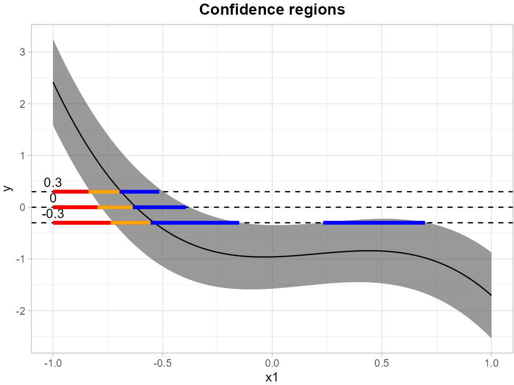
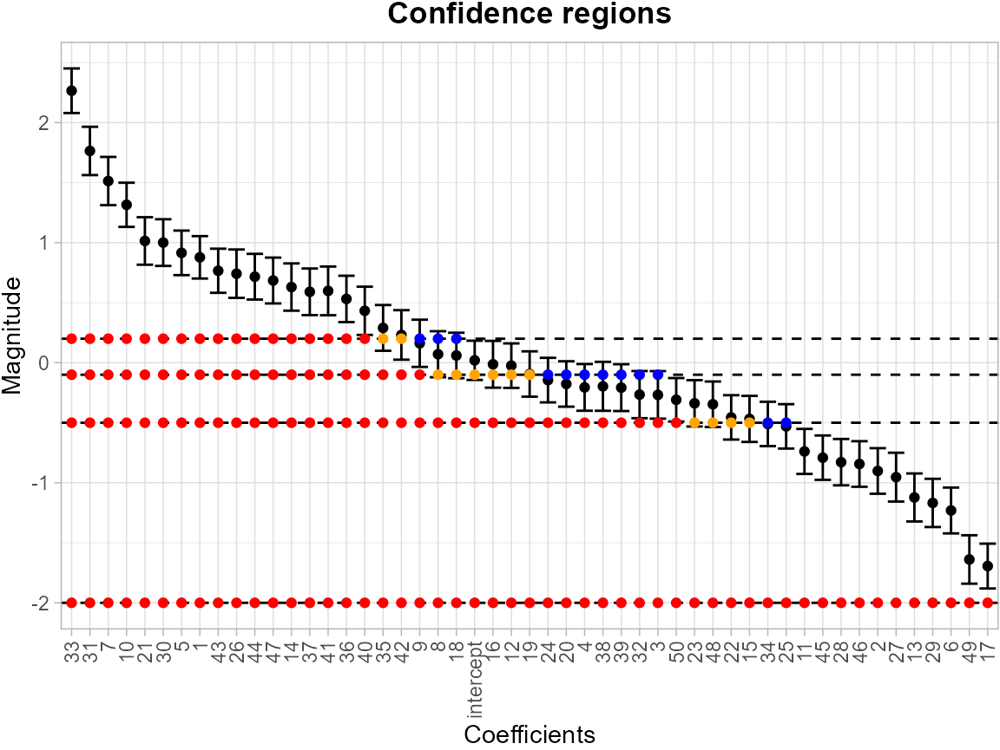

Linear_Model_Example
Angela Yu
2025-07-27
Linear_Model_Example.RmdThe example here is to use simulated data to construct the inverse confidence sets (CS) from simultaneous confidence bands (SCB) using linear regression.
SCoRES::SCB_linear_outcome() function use a
non-parametric bootstrap algorithm to construct the SCB in linear
regression. The argument df_fit specifies a data frame
containing the training design matrix used to fit the linear model,
while grid_df contains the test set design matrix for
constructing SCB. Use argument model to specify the formula
used for fitting the linear model.
library(SCoRES)
set.seed(262)
# generate simulated data
x1 <- rnorm(100)
x2 <- rnorm(100)
epsilon <- rnorm(100,0,sqrt(2))
y <- -1 + x1 + 0.5 * x1^2 - 1.1 * x1^3 - 0.5 * x2 + 0.8 * x2^2 - 1.1 * x2^3 + epsilon
df <- data.frame(x1 = x1, x2 = x2, y = y)
grid <- data.frame(x1 = seq(-1, 1, length.out = 100), x2 = seq(-1, 1, length.out = 100))
# fit the linear regression model and obtain the SCB for y
model <- "y ~ x1 + I(x1^2) + I(x1^3) + x2 + I(x2^2) + I(x2^3)"
results <- SCB_linear_outcome(df_fit = df, model = model, grid_df = grid)The levels = c(-0.3, 0, 0.3) argument specifies a set of
thresholds, and SCoRES::plot_cs() function estimates
multiple inverse upper excursion sets corresponding to these thresholds,
and plot the estimated inverse set, the inner confidence set, and the
outer confidence set.
results <- tibble::as_tibble(results)
suppressWarnings(plot_cs(results,
levels = c(-0.3, 0, 0.3),
x = seq(-1, 1, length.out = 100),
mu_hat = results$Mean,
xlab = "",
ylab = "",
level_label = T,
min.size = 40,
palette = "Spectral",
color_level_label = "black"))
In addition to linear regression, SCoRES also
providesSCoRES::SCB_logistic_outcome() for estimating the
SCB for outcome of logistic regression.
# generate simulated data
x1 <- rnorm(100)
x2 <- rnorm(100)
epsilon <- rnorm(100,0,sqrt(2))
y <- -1 + x1 + 0.5 * x1^2 - 1.1 * x1^3 - 0.5 * x2 + 0.8 * x2^2 - 1.1 * x2^3 + epsilon
y <- expit(y)
df <- data.frame(x1 = x1, x2 = x2, y = y)
grid <- data.frame(x1 = seq(-1, 1, length.out = 100), x2 = seq(-1, 1, length.out = 100))
# fit the logistic regression model and obtain the SCB for y
model <- "y ~ x1 + I(x1^2) + I(x1^3) + x2 + I(x2^2) + I(x2^3)"
results <- SCB_logistic_outcome(df_fit = df, model = model, grid_df = grid)Likewise, the levels = c(0.3, 0.4, 0.5) argument
specifies a set of thresholds, and SCoRES::plot_cs()
function estimates multiple inverse upper excursion sets corresponding
to these thresholds, and plot the estimated inverse set, the inner
confidence set, and the outer confidence set.
results <- tibble::as_tibble(results)
plot_cs(results,
levels = c(0.3, 0.4, 0.5),
x = seq(-1, 1, length.out = 100),
mu_hat = results$Mean,
xlab = "",
ylab = "",
level_label = T,
min.size = 40,
palette = "Spectral",
color_level_label = "black")
Besides, SCoRES::SCB_regression_coef can estimate the
SCB for every coefficient (50 in total) in the linear/logistic
model.
library(MASS)
# generate simulated data
M <- 50
rho <- 0.4
n <- 500
beta <- rnorm(M, mean = 0, sd = 1)
Sigma <- outer(1:M, 1:M, function(i, j) rho^abs(i - j))
X <- MASS::mvrnorm(n = n, mu = rep(0, M), Sigma = Sigma)
epsilon <- rnorm(n, mean = 0, sd = 1)
y <- X %*% beta + epsilon
df <- as.data.frame(X)
names(df) <- paste0(1:M)
df$y <- as.vector(y)
# fit the linear regression model and obtain the SCB for all betas
model <- "y ~ ."
results <- SCB_regression_coef(df, model)Likewise, the levels = c(-2, -0.5, -0.1, 0.2) argument
specifies a set of thresholds, and SCoRES::plot_cs()
function estimates multiple inverse upper excursion sets corresponding
to these thresholds, and plot the estimated inverse set, the inner
confidence set, and the outer confidence set.
results <- tibble::as_tibble(results)
plot_cs(results,
levels = c(-2, -0.5, -0.1, 0.2),
x = names(df),
mu_hat = results$Mean,
xlab = "",
ylab = "",
level_label = T,
min.size = 40,
palette = "Spectral",
color_level_label = "black")